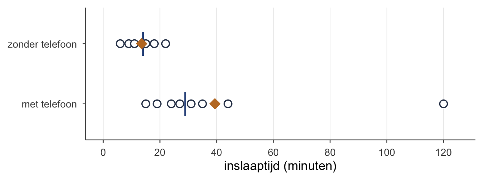
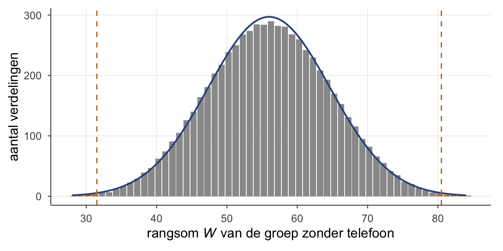
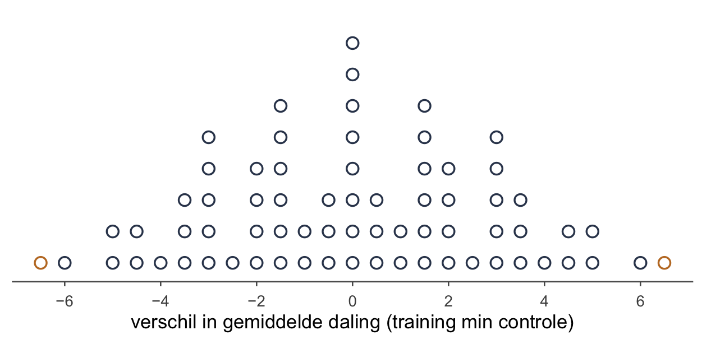
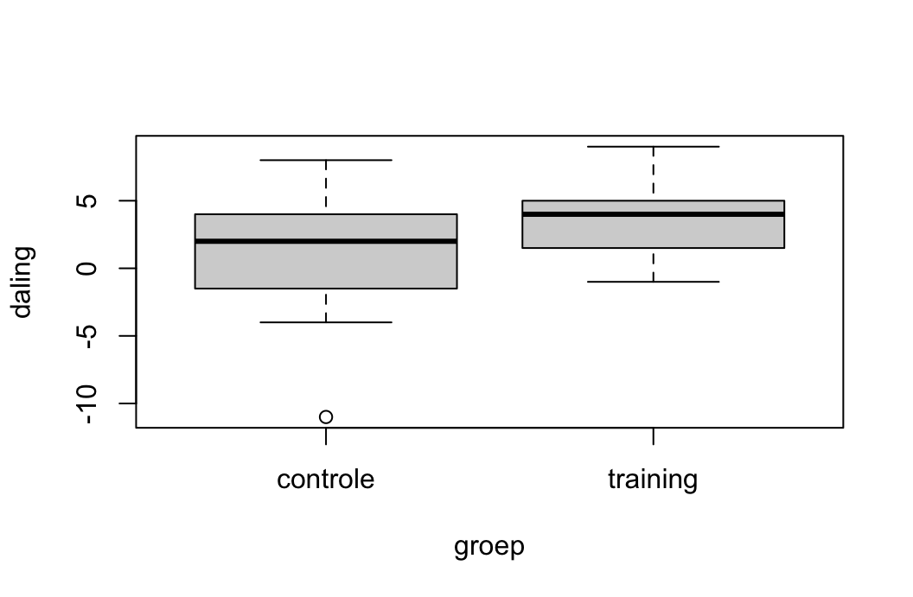
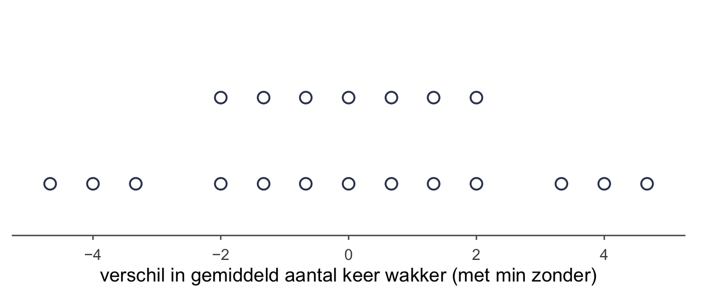

wanneer de klok mag, en wat je doet als hij niet mag
Wat je deze week leert
wanneer je de klok van de z- en de t-toets mag gebruiken
op het oog kijken of je scores scheef liggen
transformeren: een lange staart intrekken met log of wortel
rekenen met rangnummers, ook als twee scores gelijk zijn
de rangsomtoets van Wilcoxon, voor twee onafhankelijke groepen
de signed-rank-toets van Wilcoxon, voor twee gepaarde metingen
de effectmaat r bij allebei
wat een permutatietoets doet: begrijpen, niet zelf uitvoeren
in R: wilcox.test() en median()
Wanneer mag je de klok gebruiken?
Sinds week 2 (Hypothesetoetsen voor één gemiddelde) tel je geen stippen meer. Je p-waarde lees je af uit een gladde, symmetrische klok: de normaalverdeling bij de z-toets, de t-verdeling bij de t-toets. Dat scheelt een hoop tellen. Maar die klok is een belofte, en een belofte heeft voorwaarden. Die voorwaarden heten assumpties: aannames die waar moeten zijn, anders klopt de p-waarde niet.
Elke toets met een klok die je tot nu toe deed, vraagt er twee.
Onafhankelijke waarnemingen. Iedereen zit er één keer in, en niemand beïnvloedt de score van een ander. Kinderen uit één klas, deelnemers die tijdens het onderzoek met elkaar praten: dan klopt het niet meer. Bij een gepaarde toets geldt het voor de paren: elk paar staat los van de andere paren.
Een steekproevenverdeling die echt een klok is. Dat is zo als de scores in de populatie normaal verdeeld zijn. Óf als je steekproef groot genoeg is: dan liggen de gemiddelden vanzelf in een klok, ook als de losse scores scheef liggen. Dat is de centrale limietstelling uit week 2.
Hoe groot is groot genoeg? Daar bestaat geen vast getal voor. Hoe schever de scores, hoe groter de steekproef moet zijn voordat de gemiddelden netjes in een klok gaan liggen.
Bij twee onafhankelijke groepen hoort er traditioneel nog een bij: gelijke varianties in beide groepen. De Welch-versie van de t-toets, die R standaard gebruikt, heeft die niet nodig.
Klopt de tweede voorwaarde niet, dan zit je vast. De klok is dan de verkeerde vorm, en welke vorm het wél is, weet je niet. Zonder vorm geen p-waarde.
TipAanbellen of op de deur bonken
Assumpties checken is als aanbellen bij iemand voor een kop thee. Is aan de voorwaarden voldaan, dan bel je netjes aan: je doet de gewone toets.
Is dat niet zo, dan moet je anders naar binnen. Dan bonk je op de deur: je pakt een andere toets, voor als de wereld lelijk is.
Wat doe je als de wereld lelijk is? Twee uitwegen.
Transformeren: de scores omrekenen zodat ze minder scheef liggen, en dan tóch de gewone toets.
Een toets die geen klok op je scores nodig heeft: een rangtoets (deze week de twee van Wilcoxon) of een permutatietoets.
De toetsen met een klok heten parametrisch: ze gaan ervan uit dat de populatie een vaste vorm heeft die je met een paar parameters beschrijft, zoals μ en σ. Een niet-parametrische toets heeft die vorm niet nodig.
Kijken: ligt het scheef?
Of je scores normaal verdeeld zijn, kijk je na met je ogen. Drie dingen helpen:
een histogram: zie je een klok, of één lange staart?
een boxplot: liggen er losse puntjes ver weg, uitschieters? Draai hem in gedachten om tot een histogram: aan de kant van de losse puntjes zit de staart.
het gemiddelde naast de mediaan: bij een symmetrische verdeling liggen ze ongeveer op dezelfde plek.
Dat laatste is het snelst. Een lange staart trekt het gemiddelde naar zich toe, weg van waar de meeste mensen zitten. De mediaan trekt zich daar niets van aan: die wijst gewoon de middelste persoon aan, met de helft eronder en de helft erboven.
OpmerkingHet voorbeeld: inslaaptijd
Een onderzoeker vraagt 15 studenten hoe lang ze er vannacht over deden om in slaap te vallen. Van hen zaten er acht in bed nog op hun telefoon, en zeven niet.

Figuur 1: Inslaaptijd van 15 studenten. Blauwe streep: de mediaan. Oranje ruitje: het gemiddelde. Eén student met telefoon lag 120 minuten wakker.
Zonder telefoon liggen gemiddelde en mediaan vlak bij elkaar: 13.57 en 14 minuten. Met telefoon is de mediaan 29, maar het gemiddelde 39.38. Dat komt door één student die 120 minuten wakker lag. Laat je die weg, dan is het gemiddelde van de andere zeven nog maar 27.86.
Met zo weinig mensen zegt een histogram weinig: een paar staafjes, en of dat een klok is, zie je niet. Leg ze dan gewoon als stippen op een lijn, zoals hierboven.
Is dit genoeg reden om de t-toets niet te vertrouwen? Ja. Twee kleine groepen, en in één ervan een uitschieter die het gemiddelde meesleept. Hier ga je bonken.
Transformeren: de staart intrekken
Scores die scheef naar rechts liggen (veel kleine waarden, een paar heel grote) kun je omrekenen. Twee omrekeningen zijn gebruikelijk: de logaritme en de wortel. In R zijn dat log() en sqrt(). Let op: log() in R is de natuurlijke logaritme. Op een rekenmachine heet die meestal ln; de knop log is daar een andere. Allebei drukken ze grote getallen meer in dan kleine.
Wat een transformatie met grote getallen doet
minuten
wortel
log
15
3.87
2.708
30
5.48
3.401
60
7.75
4.094
120
10.95
4.787
Kijk naar de log-kolom. Van 15 naar 30 minuten is een verdubbeling, en van 60 naar 120 ook. Op de log-schaal zijn dat precies even grote stappen, 0.693 elk. De lange staart naar rechts wordt zo naar binnen gevouwen.
Twee regels:
Kies de transformatie vóórdat je toetst. Niet eerst drie proberen en dan de mooiste p-waarde rapporteren. Dat is vals spelen, net als de richting van je toets kiezen nádat je de data zag.
Transformeer ook het getal uit je nulhypothese. Toets je bij de inslaaptijd : μ = 20 minuten, dan toets je na een log-transformatie tegen log(20), en na een wortel tegen √20.
Rangnummers: alleen de volgorde telt
Stel, je houdt drie parfummetjes onder iemands neus en vraagt: hoeveel indruk maakt elk, van 0 tot 100? Ze zegt 20, 70 en 90. Moet je dan serieus nemen dat er precies 50 punten tussen de eerste en de tweede zit? Liever niet. Wat je wél gelooft: de derde maakte de meeste indruk, de eerste de minste.
Dat is het idee achter een rangtoets. Je gooit de afstanden weg en houdt alleen de volgorde over.
Zet alle scores, van alle groepen samen, op een rij van klein naar groot.
Geef ze nummers: 1, 2, 3, … Dat zijn de rangnummers.
Zijn twee of meer scores gelijk (een knoop), dan krijgen ze allemaal het gemiddelde van de plekken die ze samen innemen.
In het voorbeeld zijn er twee studenten met precies 15 minuten, één met en één zonder telefoon. Ze staan samen op plek 5 en 6, dus krijgen ze allebei .
En die student van 120 minuten? Die krijgt gewoon rangnummer 15, het hoogste. Of hij nu twee uur wakker lag of twintig: rangnummer 15. Daarmee heeft één uitschieter geen hefboom meer.
De rangsomtoets van Wilcoxon
Voor twee onafhankelijke groepen, als de scores niet normaal verdeeld zijn en de groepen klein, of als je scores alleen een volgorde zijn (ordinaal). Het is het alternatief voor de t-toets voor twee onafhankelijke groepen. Je komt hem ook tegen als de Mann-Whitney-toets: hetzelfde idee, een andere naam.
De hypothesen. In woorden:
: geen van beide groepen heeft systematisch hogere scores dan de andere
: één van de twee groepen heeft systematisch hogere scores
In symbolen schrijf je : md1 = md2 tegenover : md1 ≠ md2: de medianen in de twee populaties zijn gelijk. Dat mag je opschrijven; het klopt als de twee verdelingen dezelfde vorm hebben.
Het idee. Is er geen verschil in inslaaptijd tussen de twee groepen, dan zitten de rangnummers lukraak door elkaar, en krijgt elke groep zijn eerlijke deel. Het gemiddelde rangnummer van iedereen samen is : hier . Krijgen de zeven studenten zonder telefoon hun eerlijke deel, dan tellen hun rangnummers op tot ongeveer 7 × 8 = 56. Komen ze daar ver onder, dan liggen ze systematisch lager.
Inslaaptijd in minuten, met het rangnummer van iedereen samen
zonder telefoon
rangnummer
met telefoon
rangnummer
6
1
15
5.5
9
2
19
8
11
3
24
10
14
4
27
11
15
5.5
31
12
18
7
35
13
22
9
44
14
120
15
som
31.5
som
88.5
Stap 1: de rangsom. Tel de rangnummers van één groep op. Dat is W. Neem de groep zonder telefoon:
TipAltijd checken
Tel ook de andere groep op: 88.5. Samen moeten alle rangnummers zijn, hier . En 31.5 + 88.5 = 120. Klopt het niet, dan zit er een fout in je rangnummers, en die vind je nu nog makkelijk.
Stap 2: wat verwacht je als waar is? Het eerlijke deel van hierboven, als formule. n1 is de groep die je optelde:
Stap 3: hoeveel schommelt W door toeval? Waar deze formule vandaan komt, hoef je niet te weten: invullen is genoeg.
Wat hij betekent, zie je hieronder. Als waar is, maakt het niet uit wie welk rangnummer krijgt. Dan is elke verdeling van de 15 rangnummers over de twee groepen even goed mogelijk: dat zijn er 6435. Van elke verdeling staat hier de rangsom van de groep zonder telefoon.

Figuur 2: Alle 6435 manieren om de 15 rangnummers over de twee groepen te verdelen, met de rangsom van de groep zonder telefoon. De blauwe lijn is de klok met = 56 en = 8.64. Gestippeld: de echte W = 31.5, en even ver aan de andere kant, 80.5.
Het midden van de berg is = 56. De breedte is = 8.64. En jouw 31.5 ligt ver links, in de staart.
Stap 4: de toetsstatistiek. Hoeveel keer ligt jouw W van het midden? Dat is een z-waarde, net als in week 2:
Stap 5: de p-waarde. Wacht even: geen klok, toch? Niet op de minuten, nee. Die liggen scheef. Maar W is een som van rangnummers, en rangnummers zijn altijd gewoon 1 tot en met 15, hoe scheef de minuten ook waren. Hun som ligt daardoor netjes in een berg, en die berg ligt bijna precies onder de klok. Op W mag de klok dus wél: één staart maal twee.
Je kunt het ook aan de grens zien: |−2.84| is groter dan 1.96, dus p < .05.
Stap 6: de conclusie. .005 ≤ .05: je verwerpt de nulhypothese dat studenten met en zonder telefoon in bed even snel in slaap vallen. Studenten die in bed nog op hun telefoon zitten, vallen systematisch later in slaap.
OpmerkingHoe groot is het verschil? De effectmaat r
met N het aantal scores. Bij twee losse groepen heeft iedereen één score, dus is N gewoon iedereen in beide groepen samen. Hier .
De vuistregel van Cohen: rond .1 is een klein effect, rond .3 een gemiddeld en rond .5 een groot. Het verschil in inslaaptijd tussen studenten met en zonder telefoon is dus een groot effect.
TipWelke groep tel je op?
Maakt niet uit. Tel je de groep met telefoon op, dan is W = 88.5, en z = 2.84. Zelfde getal, ander teken: dezelfde p, dezelfde conclusie. Let alleen op dat n1 in de formule voor de groep is die je optelde.
En de t-toets? Die vindt bij dezelfde data p = .069: met de t-toets is het verschil in inslaaptijd niet significant. De ene student van 120 minuten maakt de spreiding in de telefoongroep zo groot dat de t-toets onzeker wordt. Bij de rangsomtoets is hij gewoon nummer 15.
Betekent dit dat je altijd de toets kiest die wél significant is? Nee. De keuze viel hierboven, bij het kijken naar de stippen, vóórdat er een p-waarde was. Zie je eerst beide p-waarden en kies je dan, dan speel je vals.
OpmerkingControle in R — de rangsomtoets
Met de hand reken je de eenvoudige versie: rangnummers, W, z. In R kun je precies dat nadoen:
# de inslaaptijden, in minutenzonder <-c(6, 9, 11, 14, 15, 18, 22)met <-c(15, 19, 24, 27, 31, 35, 44, 120)# rangnummers van iedereen samen; rank() middelt een knoop zelfrang <-rank(c(zonder, met))# W: de rangsom van de eerste 7 (zonder telefoon)W <-sum(rang[1:7])W
[1] 31.5
mu <-7* (7+8+1) /2sigma <-sqrt(7*8* (7+8+1) /12)z <- (W - mu) / sigmaz
[1] -2.835324
# tweezijdig: één staart maal twee2*pnorm(-abs(z))
[1] 0.004577922
En met de functie die het allemaal in één keer doet:
wilcox.test(zonder, met)
Wilcoxon rank sum exact test
data: zonder and met
W = 3.5, p-value = 0.002486
alternative hypothesis: true location shift is not equal to 0
Twee dingen zijn anders.
R’s W is niet jouw W. R trekt er de kleinst mogelijke rangsom van af. De zeven laagste rangnummers samen, 1 tot en met 7, zijn 28; en 31.5 − 28 = 3.5. Allebei goed, alleen een ander nulpunt.
R’s p is iets anders (.002 tegen jouw .005). R gebruikt niet de klok maar de berg zelf uit Figuur 2: hij telt de oranje balken. Dat is het woord exact in de kop. Dezelfde beslissing.
In R gebruik je gewoon de standaard. Wil je toch jouw handgetal terugzien: met exact = FALSE, correct = FALSE geeft R ook .005, net als jij.
Krijg je R-uitvoer en moet je zelf z uitrekenen, tel dan eerst die kleinst mogelijke rangsom er weer bij: 3.5 + 28 = 31.5. Dan pas past hij in de formules hierboven.
De signed-rank-toets van Wilcoxon
Voor twee gepaarde metingen: dezelfde mensen vóór en ná, of twee keer onder verschillende omstandigheden. Het is het alternatief voor de gepaarde t-toets, als de verschilscores niet normaal verdeeld zijn en het om weinig mensen gaat, of als je scores alleen een volgorde zijn.
Het idee: plusjes en minnetjes. Je kijkt naar de verschilscores. Is er niets aan de hand, dan zijn er ongeveer evenveel plusjes als minnetjes, en zijn ze ongeveer even groot. Zie je vooral plusjes, en dan ook nog de grote, dan is er iets.
: de verschilscores liggen in de populatie evenveel boven als onder nul
: de verschilscores liggen systematisch boven of onder nul
In symbolen schrijf je ook hier : md1 = md2, net als bij de rangsomtoets.
OpmerkingHet voorbeeld: een piekerkwartier
Negen slechte slapers proberen twee weken een piekerkwartier: elke middag een vast kwartier om te piekeren, zodat het ’s nachts minder hoeft. Hun piekerscore wordt vóór en ná gemeten. Met negen mensen kun je niet zien of de verschilscores normaal verdeeld zijn. Je weet het dus niet, en dan kies je de toets die het niet hoeft te weten: de signed-rank-toets.
Stap 1: . Daar zijn vijf handelingen voor:
Reken per persoon het verschil uit: vóór − ná. Een positief verschil is hier een daling van het piekeren.
Is een verschil precies nul, dan gooi je die persoon eruit. n is het aantal mensen dat overblijft. Hier is niemand nul, dus n = 9.
Geef de verschillen een rangnummer zonder te letten op het teken: het kleinste verschil krijgt 1. Een knoop krijgt weer het gemiddelde.
Zet het teken terug op het rangnummer.
Tel de rangnummers met een plus op. Dat is .
Piekerscore vóór en ná twee weken piekerkwartier; verschil = vóór − ná
persoon
vóór
ná
verschil
rangnummer
met teken
1
61
55
6
5
+5
2
58
55
3
2.5
+2.5
3
52
55
−3
2.5
−2.5
4
66
65
1
1
+1
5
70
62
8
6
+6
6
57
45
12
8
+8
7
63
58
5
4
+4
8
68
59
9
7
+7
9
55
40
15
9
+9
Er zit één knoop in: een verschil van +3 en een van −3. Zonder teken zijn ze allebei 3, op plek 2 en 3, dus krijgen ze allebei 2.5. Pas daarna komt het teken terug.
Tel de rangnummers met een plus op:
TipAltijd checken
Reken ook uit, de rangnummers met een min: 2.5. Samen moeten ze alle rangnummers zijn, . En 42.5 + 2.5 = 45.
Stap 2: wat verwacht je als waar is? Evenveel plus als min: is dan de helft van alle rangnummers. De helft van is:
Stap 3: hoeveel schommelt door toeval? Ook hier: invullen is genoeg.
Stap 4: de toetsstatistiek.
Stap 5: de p-waarde. Weer de klok, één staart maal twee:
Stap 6: de conclusie. .018 ≤ .05: je verwerpt de nulhypothese dat de piekerscore na twee weken piekerkwartier gelijk blijft. Na het piekerkwartier ligt de piekerscore systematisch lager dan ervoor. Of dat dóór het piekerkwartier komt, zegt deze toets niet: er is geen groep die het niet deed.
OpmerkingDe effectmaat r bij de signed-rank-toets
Dezelfde regel als bij de rangsomtoets: je deelt door de wortel uit het aantal scores. Alleen heeft hier iedereen er twee, vóór en ná. Dus is het aantal scores twee keer het aantal mensen: 2n. Hier : het verschil in piekerscore tussen vóór en ná is een groot effect.
TipVóór − ná, of ná − vóór?
Allebei goed. Draai je het om, dan worden de plussen minnen: en wisselen van plek, en z krijgt een min. Dezelfde p, dezelfde conclusie. Kijk bij een opgave wel welke volgorde er staat, want het getal hangt ervan af.
OpmerkingControle in R — de signed-rank-toets
# de piekerscores, vóór en návoor <-c(61, 58, 52, 66, 70, 57, 63, 68, 55)na <-c(55, 55, 55, 65, 62, 45, 58, 59, 40)d <- voor - na# heeft iemand een verschil van 0? haal die er dan eerst uit: d <- d[d != 0]rang <-rank(abs(d))# T+: de rangnummers van de positieve verschillenTplus <-sum(rang[d >0])Tplus
[1] 42.5
n <-length(d)z <- (Tplus - n * (n +1) /4) /sqrt(n * (n +1) * (2* n +1) /24)2*pnorm(-abs(z))
[1] 0.01781719
# en de toets zelf; R noemt T+ hier Vwilcox.test(voor, na, paired =TRUE)
Wilcoxon signed rank exact test
data: voor and na
V = 42.5, p-value = 0.01562
alternative hypothesis: true location shift is not equal to 0
R noemt hier V: 42.5, precies wat je met de hand vond. De p-waarde (.016) is weer de exacte, niet die van de klok; de beslissing is dezelfde.
Heeft iemand een verschil van nul, dan kan V afwijken van jouw . Hoe dat zit, staat verderop bij In R.
Twee keer dezelfde zes stappen. Leg de twee toetsen naast elkaar, en je ziet dat het één recept is met een andere invulling:
De rangsomtoets en de signed-rank-toets, stap voor stap
stap
rangsomtoets
signed-rank-toets
1
W: de rangsom van één groep
: de rangsom van de plussen
2
3
4
5
p: één staart maal twee
p: één staart maal twee
6
conclusie
conclusie
effectmaat
, N = alle mensen
, n = paren
De permutatietoets: week 1 opnieuw
Weet je de stippen van week 1 nog? Je deed alsof waar was, maakte honderd denkbeeldige steekproeven, en telde hoeveel stippen minstens zo ver van het midden lagen als jouw uitkomst. Dat was de p-waarde.
Een permutatietoets doet precies hetzelfde. Alleen maakt hij de stippen niet in een denkbeeldige populatie, maar uit je eigen data. Zonder klok, zonder normaalverdeling.
OpmerkingHet voorbeeld: training of niet
Acht studenten trokken een kaartje: vier kregen er een slaaptraining, vier niet. Dat lot is belangrijk, zo meteen. Hoeveel punten daalde hun piekerscore?
training: 9, 6, 12 en 8; gemiddeld 8.75
controle: 2, 5, −1 en 3; gemiddeld 2.25
Het verschil in gemiddelde daling is 6.5. Echt, of toeval?
Stel dat waar is: de training doet niets. Dan had ieder van deze acht precies dezelfde daling gehad, wat voor kaartje hij ook kreeg. En omdat het lot de kaartjes verdeelde, had elke andere verdeling net zo goed kunnen uitkomen. Het kaartje training of controle betekent dan niets. Dus mag je de kaartjes schudden.
Schudden. Laat de acht dalingen liggen, en verdeel de vier kaartjes training opnieuw over de acht mensen. Op hoeveel manieren kan dat? Op 70. Reken bij elke verdeling het verschil in gemiddelde daling uit. Elke verdeling wordt één stip.

Figuur 3: Alle 70 manieren om de kaartjes te verdelen. Elke stip is het verschil in gemiddelde daling (training min controle) in één geschudde wereld. Oranje: minstens zo ver van 0 als het echte verschil, 6.5.
Dit is weer een steekproevenverdeling: zo ziet het verschil eruit als het kaartje niets betekent. Een berg rond 0, zoals het hoort.
Tellen. Hoeveel stippen liggen minstens 6.5 van 0, aan beide kanten? Twee: de echte verdeling, en haar spiegelbeeld (de vier hoogste dalingen allemaal bij de controlegroep). Dat het er hier maar twee zijn, komt doordat het echte verschil het grootste is dat kan. Dat is lang niet altijd zo: tel dus altijd. Dus
en .029 ≤ .05: je verwerpt de nulhypothese dat de training niets doet aan het piekeren. Precies zoals in week 1: beide kanten tellen, en de grens zelf telt mee.
Bij grotere groepen kun je niet meer alle manieren afgaan. Met twaalf tegen twaalf zijn het er al 2 704 156; bij de 30 mensen van de oefendataset, 15 tegen 15, al 155 117 520. Dan laat je de computer lukraak schudden, bijvoorbeeld tienduizend keer, en tel je in die tienduizend stippen. Dat heet een random permutatietoets. De p-waarde wordt dan een heel goede benadering, en verschilt per keer een heel klein beetje.
Je kunt elk getal schudden: het verschil in gemiddelden, zoals hier, maar ook het verschil in medianen. Die laatste trekt zich, net als rangnummers, weinig aan van een uitschieter.
BelangrijkBegrijpen, niet uitvoeren
Een permutatietoets hoef je niet zelf te kunnen doen. Wel moet je drie dingen snappen:
wat er geschud wordt: de groepsnamen, niet de scores;
wat één stip is: het verschil in één geschudde wereld, waarin waar is;
wat je telt: de stippen die minstens zo ver van 0 liggen als het echte verschil, aan beide kanten.
En de rangsomtoets? Kijk nog eens naar de berg van rangsommen in Figuur 2. Dat wás een permutatietoets: de groepsnamen geschud, alleen over rangnummers in plaats van minuten. Tel je daar de oranje balken, dan liggen er 16 van de 6435 verdelingen minstens zo ver van 56 als de echte 31.5: . Dat is precies de exacte p-waarde die wilcox.test() gaf. De klok die je met de hand gebruikt, is een benadering van die telling.
Met of zonder klok op de scores
Deze week naast de toetsen van eerder
je vergelijkt
klok op de scores
geen klok op de scores
twee onafhankelijke groepen
t-toets (Welch)
rangsomtoets van Wilcoxon
twee gepaarde metingen
gepaarde t-toets
signed-rank-toets van Wilcoxon
elk verschil dat je kunt uitrekenen
permutatietoets
Hoe je in één keer de goede toets bij een vraag kiest, komt in week 7 (Toetskeuze en overzicht).
In R: wilcox.test()
Deze week doe je in R twee dingen: kijken of de scores scheef liggen, en de toetsen van Wilcoxon draaien. Je gebruikt weer de oefendataset slaapstudie: 30 slechte slapers, de helft met slaaptraining, met een piekerscore vóór en ná.
load("slaapstudie.RData")
Twee groepen. Daalde het piekeren in de trainingsgroep meer dan in de controlegroep? Maak eerst een kolom met de daling, en kijk:
slaapstudie$daling <- slaapstudie$piekeren_voor - slaapstudie$piekeren_naboxplot(daling ~ groep, data = slaapstudie, ylab ="daling")# de mediaan per groeptapply(slaapstudie$daling, slaapstudie$groep, median)
controle training
2 4

Figuur 4: Daling van de piekerscore (vóór min ná), per groep.
Dan de rangsomtoets. De ~ lees je als “uitgesplitst naar”: de daling, uitgesplitst naar groep.
wilcox.test(daling ~ groep, data = slaapstudie)
Wilcoxon rank sum exact test
data: daling by groep
W = 80, p-value = 0.1813
alternative hypothesis: true location shift is not equal to 0
p = .18, dus je verwerpt de nulhypothese niet: met deze 30 mensen is er geen systematisch verschil in daling tussen de twee groepen te zien. (De t-toets op dezelfde vraag geeft p = .11, en verwerpt ook niet.)
Welke groep telt R op? Met ~ de groep die eerst komt in het alfabet: controle. (Geef je R twee rijtjes, zoals bij de controle van de rangsomtoets, dan het eerste rijtje.) Hun rangsom is 200; R trekt er de kleinst mogelijke af, , en meldt W = 80.
Twee gepaarde metingen. Daalde het piekeren binnen de trainingsgroep van de slaapstudie? Kies de rijen, en geef R de twee kolommen met paired = TRUE:
training <- slaapstudie[slaapstudie$groep =="training", ]wilcox.test(training$piekeren_voor, training$piekeren_na, paired =TRUE)
Wilcoxon signed rank exact test
data: training$piekeren_voor and training$piekeren_na
V = 113.5, p-value = 0.0007324
alternative hypothesis: true location shift is not equal to 0
p < .001: je verwerpt de nulhypothese dat het piekeren in de trainingsgroep gelijk bleef. Het daalde systematisch.
R noemt hier V. Maar let op: in de trainingsgroep zitten twee mensen zonder verschil, en dan is V niet het getal dat jij met de hand zou vinden. Voor je conclusie maakt het hier niet uit. Met de hand blijft de regel: een verschil van nul gaat eruit.
OpmerkingVoor wie verder wil — waarom R soms een ander getal geeft
Een verschil van nul. Met de hand gooi je de twee mensen zonder verschil eruit, en dan vind je = 89.5. R (vanaf versie 4.6) laat ze in zijn exacte toets meedoen bij het rangnummeren, en komt daardoor op V = 113.5. Zet je exact = FALSE, dan laat R de nullen weg, net als jij, en meldt hij V = 89.5, met p = .002. Allebei verwerpen ze.
Een oudere R. Krijg je een waarschuwing als cannot compute exact p-value with ties, en staat er with continuity correction in de kop? Dan heb je een R van vóór versie 4.6. Die kon met knopen niet exact rekenen en schakelde dan over op de klok, met een kleine correctie. Een oudere R laat bovendien een verschil van nul altijd weg; V en de p-waarde zijn dan anders dan hierboven. De beslissing is hier hetzelfde. Welke versie je hebt, zie je met R.version.string.
Oefenen
Een p-waarde reken je uit in R, met 2 * pnorm(-abs(z)). Of je beredeneert hem met de grens 1.96: ligt |z| daarboven, dan is p < .05; ligt hij eronder, dan is p > .05. Voor een beslissing is dat genoeg.
OpmerkingOpgave 6.1 — Begrippen
Wat is een niet-parametrische toets?
Noem twee situaties waarin een toets van Wilcoxon beter past dan een t-toets.
Welke toets van Wilcoxon is voor gepaarde metingen, en welke voor twee onafhankelijke groepen?
Wat doe je bij de rangsomtoets als twee scores gelijk zijn?
Schrijf de formules op voor de verwachte waarde en de standaarddeviatie van W in de rangsomtoets.
En die voor in de signed-rank-toets.
OpgeletAntwoord 6.1
Een toets die niet aanneemt dat de populatie een vaste vorm heeft, zoals de normaalverdeling. Rangtoetsen en permutatietoetsen zijn niet-parametrisch.
Als de scores niet normaal verdeeld zijn en de groepen klein (dan helpt de centrale limietstelling niet genoeg), en als de scores alleen een volgorde zijn (ordinaal).
Gepaard: de signed-rank-toets. Twee onafhankelijke groepen: de rangsomtoets.
Ze krijgen allebei het gemiddelde van de rangnummers die ze samen innemen. Op plek 4 en 5 wordt dat 4.5 en 4.5.
en , met n1 de groep waarvan je de rangnummers optelde.
en , met n het aantal paren zonder verschil van nul.
OpmerkingOpgave 6.2 — De rangsomtoets met de hand
Slapen studenten die ’s avonds nog koffie drinken, onrustiger? Een onderzoeker vraagt 17 studenten hoe vaak ze afgelopen week ’s nachts wakker werden. Van hen dronken er acht na zes uur ’s avonds nog koffie, en negen niet.
Aantal keer wakker in een week
aantal keer wakker
koffie
5, 9, 3, 12, 6, 4, 2, 11
geen koffie
2, 4, 7, 6, 1, 5, 3, 0, 4
Tellingen als deze liggen vaak scheef, en de groepen zijn klein. Je doet de rangsomtoets met de hand, met de normaalverdeling als benadering.
Geef alle scores hun rangnummer.
Tel de rangnummers van de koffiegroep op: W.
Bereken .
Bereken .
Bereken z.
Wat is de p-waarde (tweezijdig)? Met R, of met de grens 1.96.
Wat is je conclusie (α = .05)?
Bereken de effectmaat r. Hoe groot is het verschil in aantal keer wakker?
OpgeletKort antwoord 6.2
Zie de volledige uitwerking.
W = 88.
= 72.
= 10.39.
z = 1.54.
p = .12.
Niet verwerpen.
r = .37: het verschil in aantal keer wakker is een gemiddeld effect.
OpgeletVolledige uitwerking 6.2 — stap voor stap
Alle 17 scores op een rij, met hun plek en hun rangnummer. Er zitten veel knopen in: twee keer 2 staat op plek 3 en 4, dus allebei 3.5; drie keer 4 staat op plek 7, 8 en 9, dus alle drie 8.
Check: de geen-koffiegroep telt op tot 65, en 88 + 65 = 153 = .
.
.
.
. In R: 2 * pnorm(-abs(z)). Of met de grens: 1.54 ligt onder 1.96, dus p > .05.
.12 > .05: je verwerpt de nulhypothese niet dat studenten met en zonder avondkoffie even vaak wakker worden. Dat betekent niet dat er geen verschil is tussen studenten met en zonder avondkoffie. Met 17 studenten is het verschil niet sterk genoeg om te zien.
: het verschil in aantal keer wakker tussen de twee groepen is een gemiddeld effect. Niet significant, en toch niet niks: met meer studenten had dit verschil het misschien wel gehaald.
Had je de geen-koffiegroep opgeteld: W = 65, = 81, z = −1.54. Dezelfde p.
OpmerkingOpgave 6.3 — Opgave 6.2 in R
Zet de scores van opgave 6.2 in R, als twee rijtjes koffie en geen, en doe de rangsomtoets met wilcox.test().
R meldt een andere W dan jij met de hand vond. Hoe hangen ze samen?
Krijg je dezelfde p-waarde als in 6.2? Dezelfde beslissing?
Wilcoxon rank sum exact test
data: koffie and geen
W = 52, p-value = 0.1334
alternative hypothesis: true location shift is not equal to 0
R trekt de kleinst mogelijke rangsom van de koffiegroep eraf: de acht laagste rangnummers samen, . En 88 − 36 = 52.
Bijna: R geeft .13, jij .12. R rekent met de echte verdeling van W (het woord exact), jij met de klok. Dezelfde beslissing: niet verwerpen.
OpmerkingOpgave 6.4 — De signed-rank-toets met de hand
Word je trager na een korte nacht? Acht studenten doen twee keer een reactietijdtaak: één keer na een gewone nacht, één keer na een nacht van vier uur. Reactietijden liggen vaak scheef.
Reactietijd in milliseconden
student
1
2
3
4
5
6
7
8
gewone nacht
410
380
450
500
360
440
390
470
korte nacht
470
370
520
610
400
450
480
520
Welke toets past hier, en waarom?
Bereken , met verschil = korte nacht − gewone nacht.
Bereken en .
Bereken z en de p-waarde (tweezijdig).
Bereken de effectmaat r.
Wat is je conclusie (α = .05)?
OpgeletKort antwoord 6.4
De signed-rank-toets: twee gepaarde metingen, weinig mensen, scheve scores.
= 34.5.
= 18; = 7.14.
z = 2.31; p = .021.
r = .58.
Verwerpen.
OpgeletVolledige uitwerking 6.4 — stap voor stap
Dezelfde acht studenten zijn twee keer gemeten: gepaard. Met acht mensen kun je niet zien of de verschilscores normaal verdeeld zijn, en reactietijden liggen vaak scheef. Dus de signed-rank-toets, niet de gepaarde t-toets.
De verschillen, hun rangnummer zonder teken, en het teken terug:
Reactietijd in milliseconden; verschil = korte nacht − gewone nacht
student
gewone nacht
korte nacht
verschil
rangnummer
met teken
1
410
470
60
5
+5
2
380
370
−10
1.5
−1.5
3
450
520
70
6
+6
4
500
610
110
8
+8
5
360
400
40
3
+3
6
440
450
10
1.5
+1.5
7
390
480
90
7
+7
8
470
520
50
4
+4
Er is een knoop: −10 en +10 zijn zonder teken allebei 10, op plek 1 en 2, dus allebei 1.5. Niemand heeft een verschil van nul, dus n = 8.
. Check: = 1.5, en samen 36 = .
en .
, en .
: het verschil in reactietijd tussen een korte en een gewone nacht is een groot effect. Deel je per ongeluk door , dan kom je op .82 uit.
.021 ≤ .05: je verwerpt de nulhypothese dat de reactietijd na een korte nacht gelijk is aan die na een gewone nacht. Na een korte nacht reageren studenten systematisch trager.
In R: wilcox.test(kort, gewoon, paired = TRUE) geeft V = 34.5 (jouw ) en de exacte p = .023. Zet je de rijtjes andersom, wilcox.test(gewoon, kort, paired = TRUE), dan meldt R V = 1.5: dan rekent hij gewone − korte nacht.
OpmerkingOpgave 6.5 — Kijken, dan kiezen
Gebruik slaapstudie, met de kolom daling van In R hierboven.
Maak per groep een histogram van de daling. Gebruik hist(slaapstudie$daling[slaapstudie$groep == "training"]), en net zo voor de controlegroep.
Vergelijk per groep het gemiddelde met de mediaan.
Vind je de t-toets hier acceptabel? Waarom wel of niet?
Doe de t-toets en de rangsomtoets. Welke p-waarden krijg je?
Iemand zegt: “Ik rapporteer gewoon de kleinste van de twee.” Wat vind je daarvan?
Met 15 mensen per groep is een histogram grof: een paar staafjes. Geen lange staart. In de controlegroep valt wel één persoon op, met een daling van −11: bij die persoon steeg het piekeren juist flink. De boxplot bij In R tekent hem als los rondje.
Gemiddelde en mediaan liggen in beide groepen niet ver uit elkaar: controle 1.07 tegen 2, training 3.47 tegen 4.
Daar valt iets voor te zeggen, en iets tegen. Geen lange staart, en gemiddelde en mediaan liggen dicht bij elkaar: de t-toets is te verdedigen. Maar 15 per groep is niet veel, en die ene uitschieter trekt aan het gemiddelde van de controlegroep. Hier is geen fout antwoord, zolang je je keuze uitlegt, en zolang je hem maakt vóór je toetst.
Beide toetsen, en alleen hun p-waarde:
t.test(daling ~ groep, data = slaapstudie)$p.value
[1] 0.1108642
wilcox.test(daling ~ groep, data = slaapstudie)$p.value
[1] 0.1813086
t-toets: .11. Rangsomtoets: .18. Met geen van beide is het verschil in daling tussen de groepen significant.
Dat is vals spelen. Kies je de toets op de uitkomst, dan wordt de kans op een vals alarm groter dan de α die je afsprak. De toets kies je op wat je in a tot en met c zag, vóórdat je een p-waarde hebt.
OpmerkingOpgave 6.6 — Schudden, drie tegen drie
Zes studenten: drie slapen met oordopjes, drie zonder. Hoe vaak werden ze afgelopen week wakker?
met oordopjes: 1, 5 en 3
zonder: 4, 8 en 9
Wat is het verschil in gemiddeld aantal keer wakker (met min zonder)?
Je doet een permutatietoets. Wat schud je, en op hoeveel manieren kan dat?
Hieronder staan alle verdelingen als stippen. Hier is niets gekleurd: tel zelf.

Figuur 5: Alle 20 manieren om drie van de zes studenten het kaartje met oordopjes te geven. Elke stip is het verschil in gemiddeld aantal keer wakker (met min zonder).
Wat is de p-waarde (tweezijdig)?
Wat is de kleinst mogelijke p-waarde bij drie tegen drie? Wat betekent dat voor zo’n klein onderzoek?
Hoe zou je dit doen bij de 30 mensen van slaapstudie?
OpgeletAntwoord 6.6
3 − 7 = −4.
De kaartjes met en zonder, over dezelfde zes scores. Kies drie van de zes voor met: dat kan op 20 manieren.
Tel de stippen die minstens 4 van 0 liggen, aan beide kanten: 4. Dus . Niet verwerpen.
Het kleinst mogelijke is dat alleen de echte verdeling en haar spiegelbeeld zo ver liggen: . Dat is altijd meer dan .05. Met drie tegen drie kún je dus tweezijdig nooit verwerpen, hoe groot het verschil ook is. Zo’n onderzoek is te klein om iets te kunnen vinden.
15 tegen 15 geeft 155 117 520 manieren: te veel om af te gaan. Dan laat je de computer lukraak schudden, bijvoorbeeld tienduizend keer: een random permutatietoets.
Tentamenblok
Zo kun je het op een tentamen tegenkomen: meerkeuze met vier opties, een getal invullen, of ja of nee. Waar je een p-waarde nodig hebt, staat hij erbij of kun je hem met de grens 1.96 beredeneren.
OpmerkingVraag 1 — meerkeuze
Twaalf mensen krijgen een medicijn en worden vóór en ná gemeten. De verschilscores liggen erg scheef. Welke toets past het best?
de t-toets voor twee onafhankelijke groepen
de rangsomtoets van Wilcoxon
de signed-rank-toets van Wilcoxon
de χ²-toets
OpgeletAntwoord vraag 1
C. Vóór en ná bij dezelfde mensen is gepaard, en scheve verschilscores bij twaalf mensen vragen om een toets die geen klok op de scores nodig heeft. B is voor twee losse groepen.
OpmerkingVraag 2 — meerkeuze
Acht mensen worden vóór en ná gemeten. Dit zijn de scores:
Scores vóór en ná
persoon
1
2
3
4
5
6
7
8
vóór
12
15
9
14
11
16
10
13
ná
9
15
7
10
12
11
6
11
Wat is de verwachte waarde van als waar is?
14
18
28
36
OpgeletAntwoord vraag 2
A. Persoon 2 heeft vóór en ná dezelfde score: een verschil van nul, en die gaat eruit. Dus n = 7, en .
B is de val: dan heb je de nul meegeteld (). C is de som van álle rangnummers, , en D is die som mét de nul erbij.
OpmerkingVraag 3 — invullen
Zelfde data als vraag 2, met verschil = vóór − ná. Wat is ?
OpgeletAntwoord vraag 3
27. De verschillen zijn 3, 0, 2, 4, −1, 5, 4 en 2. Zonder de nul blijven er 7 over. Zonder teken op volgorde, met rangnummer:
De verschillen zonder de nul, van klein naar groot (zonder teken)
verschil
−1
2
2
3
4
4
5
rangnummer
1
2.5
2.5
4
5.5
5.5
7
Alleen de −1 heeft een min, met rangnummer 1. Dus = 28 − 1 = 27.
OpmerkingVraag 4 — meerkeuze
Groep A scoort 3, 7, 8 en 12; groep B scoort 5, 8, 10, 14 en 15. Wat is de rangsom W van groep A?
15
15.5
16
29.5
OpgeletAntwoord vraag 4
B. De twee achten (één in elke groep) staan op plek 4 en 5 en krijgen allebei 4.5. Groep A: 1 + 3 + 4.5 + 7 = 15.5. A en C krijg je als je de knoop niet middelt; D is de rangsom van groep B.
OpmerkingVraag 5 — meerkeuze
Wat gebeurt er bij een permutatietoets?
Je trekt steeds een nieuwe steekproef uit de populatie.
Je schudt de groepsnamen over dezelfde scores, en rekent telkens het verschil uit.
Je vervangt de scores door rangnummers en telt die per groep op.
Je legt een normaalverdeling over de scores.
OpgeletAntwoord vraag 5
B. De scores blijven liggen; alleen wie bij welke groep hoort, wordt geschud. A is de denkbeeldige steekproevenverdeling van week 1, C is wat je bij de rangsomtoets met de hand doet, en D is precies wat een permutatietoets níét nodig heeft.
OpmerkingVraag 6 — meerkeuze
Een onderzoeker schudt de groepsnamen 1000 keer. Bij 11 van die keren is het verschil minstens zo groot als het echte verschil, en bij 7 is het minstens zo groot de andere kant op. Wat is de tweezijdige p-waarde?
.011
.018
.036
.009
OpgeletAntwoord vraag 6
B. Beide kanten tellen: . A is maar één kant. C verdubbelt wat al twee kanten waren, en D halveert het.
OpmerkingVraag 7 — ja of nee
Een onderzoeker doet de t-toets en de rangsomtoets op dezelfde data. De t-toets geeft p = .068, de rangsomtoets p = .041. Hij rapporteert de rangsomtoets, omdat die significant is. Mag dat?
OpgeletAntwoord vraag 7
Nee. De toets kies je vooraf, op wat je weet over de data: scheef of niet, groot of klein, gepaard of niet. Wie kiest op de p-waarde, maakt de kans op een vals alarm groter dan α.
OpmerkingVraag 8 — meerkeuze
Een signed-rank-toets bij 12 mensen geeft z = 1.83. Hoe groot is het verschil tussen de twee metingen, uitgedrukt in r?
r = .37, een gemiddeld effect
r = .53, een groot effect
r = .15, een klein effect
dat kun je zonder de p-waarde niet zeggen
OpgeletAntwoord vraag 8
A. . B deelt door de wortel uit 12 in plaats van 24: bij de signed-rank-toets tel je de scores, niet de mensen. C deelt gewoon door het aantal mensen, zonder wortel en zonder de 2.
OpmerkingVraag 9 — ja of nee
Je toetst : μ = 30 voor het aantal minuten dat studenten per dag aan sporten besteden. De scores zijn scheef, dus je neemt eerst van iedereen de logaritme. Toets je daarna nog steeds tegen 30?
OpgeletAntwoord vraag 9
Nee. Je rekent het getal uit je nulhypothese op dezelfde manier om: je toetst tegen log(30) = 3.40.
OpmerkingVraag 10 — meerkeuze
Bij een rangsomtoets met 9 en 11 mensen vind je met de hand voor de eerste groep W = 71. R meldt bij dezelfde data W = 26. Wat is er aan de hand?
Je hebt een rekenfout gemaakt.
R telt de andere groep op.
R trekt de kleinst mogelijke rangsom van jouw W af.
R heeft een correctie voor knopen toegepast.
OpgeletAntwoord vraag 10
C. De kleinst mogelijke rangsom van 9 mensen is , en 71 − 45 = 26. Jouw W en die van R zijn allebei goed, met een ander nulpunt.
Week 6 in één oogopslag
Wat deze week ophangt
wat het is
om te onthouden
assumpties
onafhankelijke waarnemingen; een steekproevenverdeling die een klok is
groot genoeg hangt af van hoe scheef
kijken
histogram, boxplot, gemiddelde naast mediaan
een staart trekt het gemiddelde mee
transformeren
log of wortel bij een staart naar rechts
vooraf kiezen; ook omrekenen
rangnummers
alleen de volgorde telt
een knoop krijgt het gemiddelde
rangsomtoets
twee onafhankelijke groepen
;
signed-rank-toets
twee gepaarde metingen
nullen eruit; ;
permutatietoets
groepsnamen schudden, stippen tellen
begrijpen, niet uitvoeren
in R
wilcox.test(), met paired = TRUE als het gepaard is